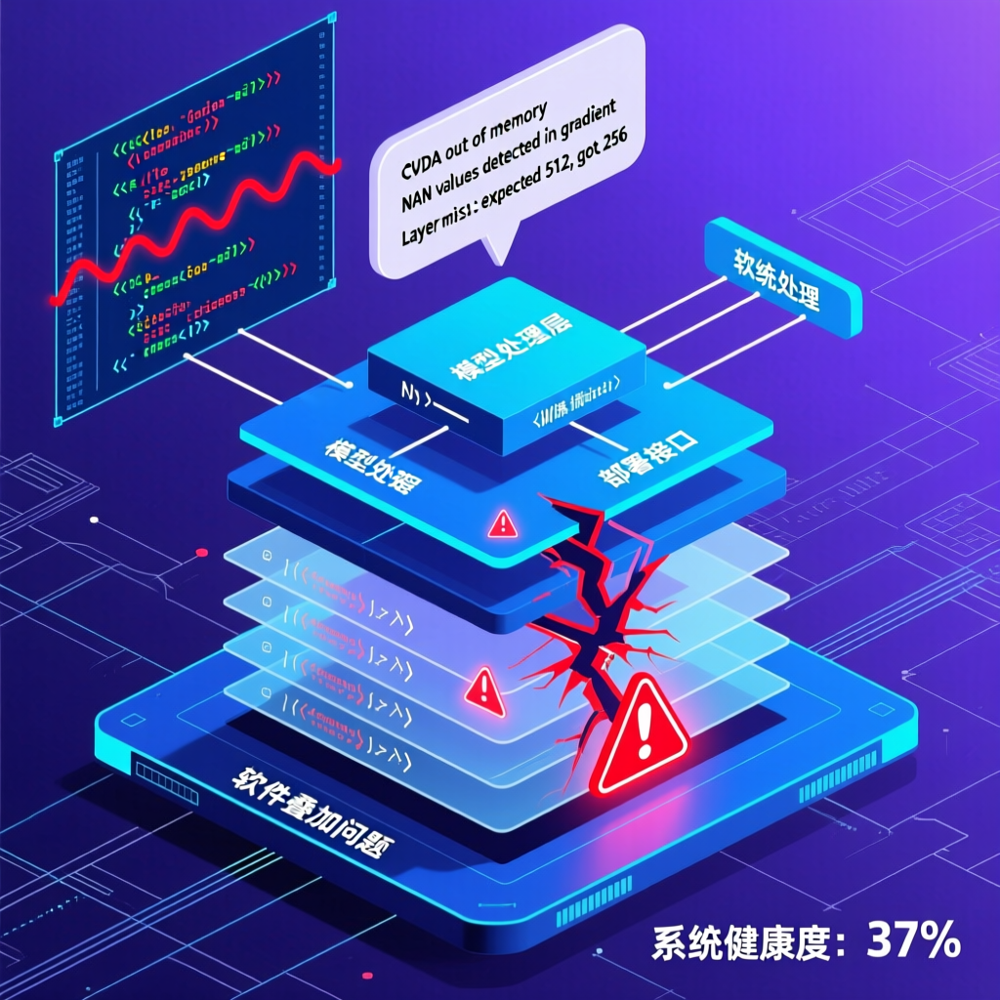

過去一個多月，無數開發者懷疑人生——Claude Code 突然變笨降智、代碼跑不通、對話失憶。真相終於揭曉：不是黑客攻擊、不是模型降級，而是三個看似不起眼的產品層小改動在不同時間點悄悄上線，最終疊加在一起，製造了一場橫跨整個開發者社區的集體混亂。

這次質量事故的罪魁禍首不是單一原因，而是三個完全獨立、看似不起眼的產品層小改動，在不同時間點悄悄上線，最終疊加在一起，製造了一場橫跨整個開發者社區的集體混亂。
過去一個多月，幾乎所有 Claude Code 的重度使用者都產生了一個強烈的共鳴：
• 有人說 Claude Code 突然變笨降智了
• 有人說寫出來的代碼根本跑不通
• 有人說明明剛才還在聊複雜邏輯，下一句就完全失憶了
起初，所有人都以為是自己的問題——可能是自己太習慣了 AI 的高水平，突然恢復到「正常」狀態就難以接受。但隨著時間推移，越來越多開發者開始懷疑：這不是錯覺，Claude Code 真的出問題了。
開發者社區第一時間開始排查各種可能原因：
Claude Code 不是被惡意入侵或篡改，系統本身是安全的。
Claude 模型本身並未被降級，底層能力沒有問題。
底層算力沒有出現任何災難性故障，基礎設施運作正常。
三個完全獨立、看似不起眼的產品層小改動悄悄上線，疊加造成系統性故障。
令所有人意想不到的是，這起持續一個多月、讓無數開發者懷疑人生的質量事故，最後確認的原因既不是黑客攻擊，也不是模型被惡意降級，更不是底層算力出了什麼災難性故障。
「三個完全獨立、看似不起眼的產品層小改動，在不同時間點悄悄上線，最終疊加在一起，製造了一場橫跨整個開發者社區的集體混亂。」
— Anthropic 官方事後覆盤Anthropic 官方最終發布了一篇事後覆盤，大飛我看完這篇覆盤的第一感受是：它不僅是一次簡單的故障，更是一個關於現代軟件工程複雜性的深刻案例研究。
Claude Code 這次神秘降級事件，本質上是一個現代軟件工程的經典案例：三個看似無害的獨立改動，在不同時間上線後疊加在一起，造成了横跨整個開發者社區的系統性故障。
這個故事告訴我們，在複雜的分散式系統中，看得見的問題往往不是真正的問題——看不見的疊加效應才是最大的威脅。